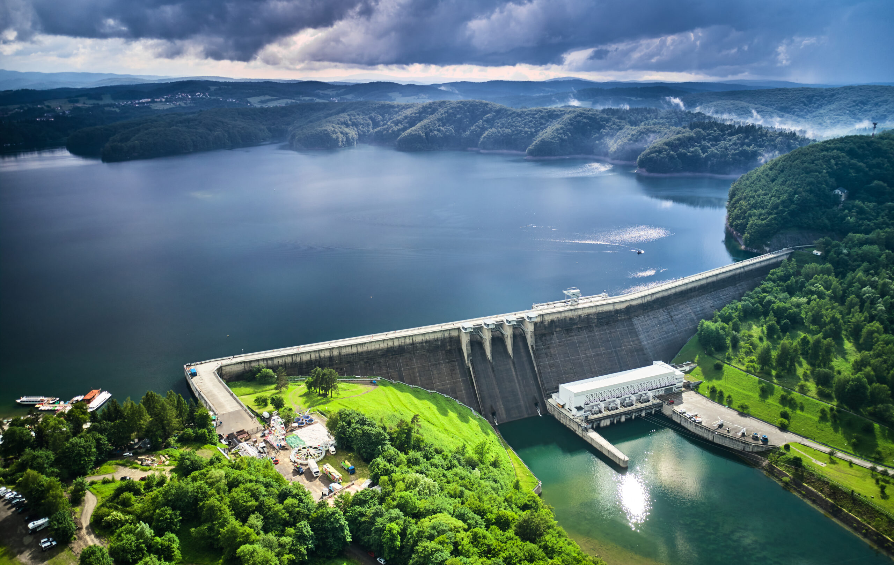
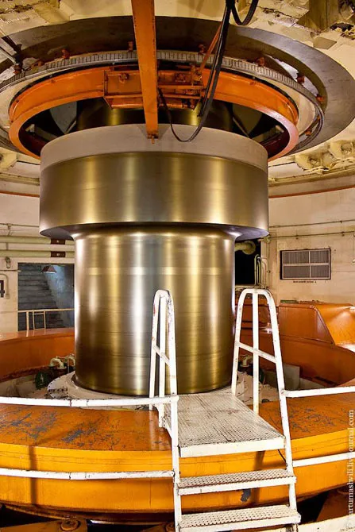

Energia wodna
Czym jest?
Jest to jedno z podstawowych odnawialnych źródeł energii. Umożliwia
wytwarzanie energii elektrycznej dzięki ruchowi wody. Dawniej jednak
stosowano ją do napędzania np.
młynów

Energetyka wodna ma w Polsce najdłuższe tradycje ze wszystkich odnawialnych
źródeł energii. Elektrowni wodnych w Polsce jest aktualnie około 800, które
odpowiadały w 2022r. za około 1.5% całkowitej produkcji energii. Na świecie
ten współczynnik wyniósł 16%.
Na czym polega?
Polega na wykorzystaniu energii kinetycznej płynącej wody, która często
podlega spiętrzeniu dzięki zastosowaniu
zapór
,
co zwiększa jej prędkość,
a zaczym też energię, która następnie przekształcana jest w energię
mechaniczną, przy wykorzystaniu różnego rodzaju turbin. Energia ta
później zostaje przetransformowana w energię elektryczną za pomocą
generatorów
.
Elektrownie wodne
Proces opisany powyżej jest realizowany w elektrowniach wodnych.
Wyróżniamy elektrownie wodne:
🌊
przepływowe (bez zbiornikowe)
🌊
zbiornikowe
🌊
szczytowo-pompowe
🌊
pływowe
🌊
falowo-pływowe.
Najważniejszym elementem elektrowni wodnej są turbiny zbudowane z
metalowych wirników wyposażonych w łopartki. Pod wpływem
przepływającej wody wirniki turbiny obracają się i dzięki temu
przetwarzają energię wody na energię mechaniczną. Dzięki prądnicy
sprzężonej z turbnicą produkowana jest energia elektryczna, która
następnie jest wysyłana do sieci elektroenergetycznej.
Zalety i wady
Zalety:
🌊Wykorzystywanie surowców odnawilnych, które wpływają na brak
emisji szkodliwych gazów
🌊Niższe koszty eksploatacji
🌊Oszczędność paliw kopalnianych
🌊Kożystny wpływ na bilans hydrologiczny
Wady:
🌊Budowa wpływa na środowisko naturalne
🌊Wysoki koszt budowy
🌊Hałaśliwość, utrudniająca życie okolicznym mieszkańcom